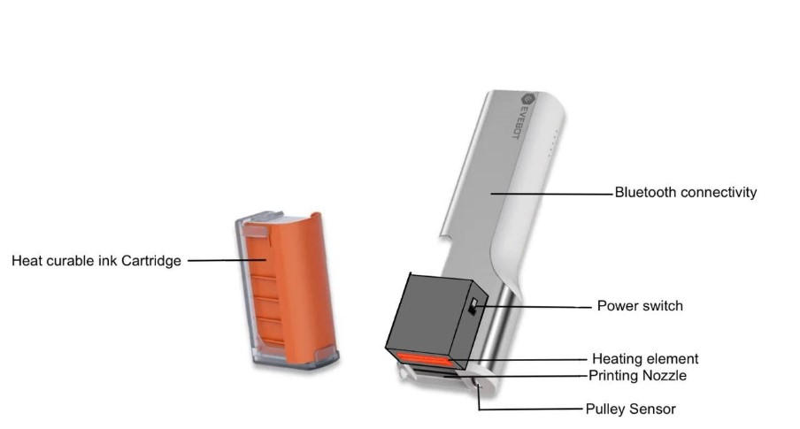
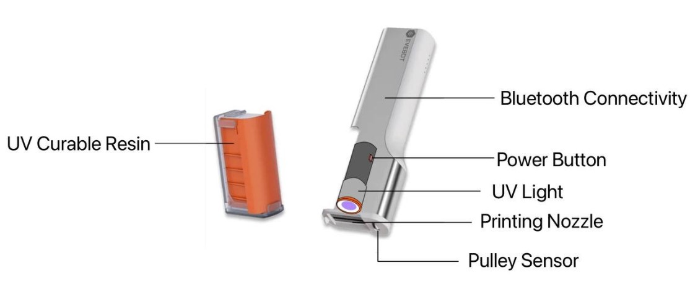
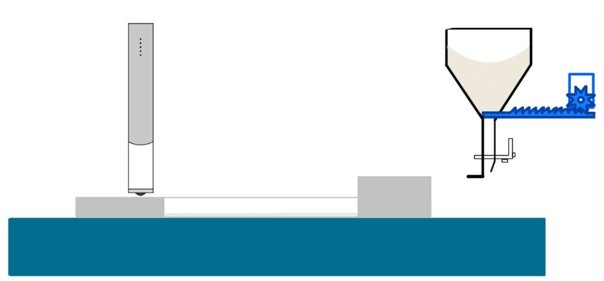

Domains Explored:
Nutritional Enhancement in Food and Beverage
It has been observed that there is an increasing rate of older adults and elderly experiencing
nutritional deficiency due to the lack of protein. Singaporeans consumes about 2.6kg of coffee per capita a year, and the coffee intake
is expected to grow more in future years. How can we help increase protein intake with coffee?
This domain was rejected, taking into considerations of different dietary restrictions.
Information Accessibility for the Visually Impaired (Chosen domain)
More than 1.1 billion people in the world are visually impaired, with 9 out of 10 reporting difficulty reading information and/or labels. Such problems stem from the fact that printed information is often in small text, with no consideration of the visually impaired demographic. Accessing information is essential to make informed decisions. Such information includes expiry dates, dietary details, and usage instructions
How can we make use of a Food Printer to make information more accessible?
There are a few methods commonly used by the visually impaired when accessing information. One of which
would be to have someone accompany them, telling them the information on the spot. While other methods in use
would be Braille and NaviLens Technology.
NaviLens Technology
This solution uses a NaviLens code that can be read by the NaviLens application
through the phone's camera. Since the code is printed with four different colors, the code
can be easily identified from a distance.
While selected manufacturers are printing NaviLens codes onto packagings, problems with reading the code has been reported.
Braille (Chosen Solution)
Braille is a widely used system to translate languages into raised dots, in which the
visually impaired can feel. This system normally comes in two sizes, regular and jumbo, where the sizes of each dot
as well as the distance between the dots are fixed.
Key Functionalities of NaviLens Printing Technology:
- Outputs material on a surface.
- Communicates with external devices.
- Transforms input into code.
Key Functionalities of a Braille Embosser:
- Elevates the surface.
- Communicates with external devices.
- Transforms input into machine actions.
Why Braille over NaviLens?:
Tactile feedback allows weighty information to be processed faster.
Enhanced memory retention.
Preventing over-reliance on technology.
Key Functionalities of a Braille Embosser:
- Elevates the surface.
- Communicates with external devices.
- Transforms input into machine actions.
Key Functionalities of a Generic Food Printer:
- Output materials through the nozzle.
- Move the nozzle in multiple planes.
- Connect to operator's device to retrieve user input.
We can identify that the Food Printer will need to have an additional function to extrude materials to elevate a surface.
Evaluating technology that can be used to support the above functionality.
Thermal Radiation Curing

This solution involves adding a heating element to the Food Printer itself, as well as
using a heat curable ink catridge.
This technology was rejected, taking into considerations of the required temperature needed for curing, as well as
damage it might cause to both the food printer and the surface it will be printing on.
Ultraviolet Light Curing

This solution involves adding a UV light to the Food Printer, and changing the ink to a
UV curable ink. The curing process with UV lights usually takes less time than thermal radiation.
However, using UV curing for food related processes can pose potential risks such as
regulatory compliance, safety concerns regarding toxicity.
Binder Jetting Additive Manufacturing (Chosen Technology)

This solution involves using powdered materials and a binding agent. This will only involve adding
a powder dispenser and a roller to the existing Food Printer, the only solution that will not alter
the original Food Printer configurations.